ClinicusMed · Dissecações reais — material da cátedra · Ficha Padronizada
Os músculos da cabeça se dividem em 2 grandes categorias: os músculos da mímica facial (ou músculos cutâneos — sem fáscia própria, inserem-se direto na pele, por isso movem a expressão do rosto) e os músculos da mastigação (fixados em ossos nas 2 extremidades, movem a Articulação Temporomandibular). Essa ficha usa fotos reais de dissecação (material da cátedra), organizadas pelos 5 grupos clássicos da mímica + os 4 músculos da mastigação.
Ao final dessa ficha, você será capaz de listar os 5 grupos de músculos da mímica facial e seus principais representantes, reconhecer que TODOS são inervados pelo Nervo Facial (VII), identificar os 4 músculos da mastigação e suas inserções, e reconhecer que TODOS são inervados pelo Nervo Mandibular (V3) — a diferença de inervação entre os 2 grupos é um dos pontos mais cobrados da matéria.
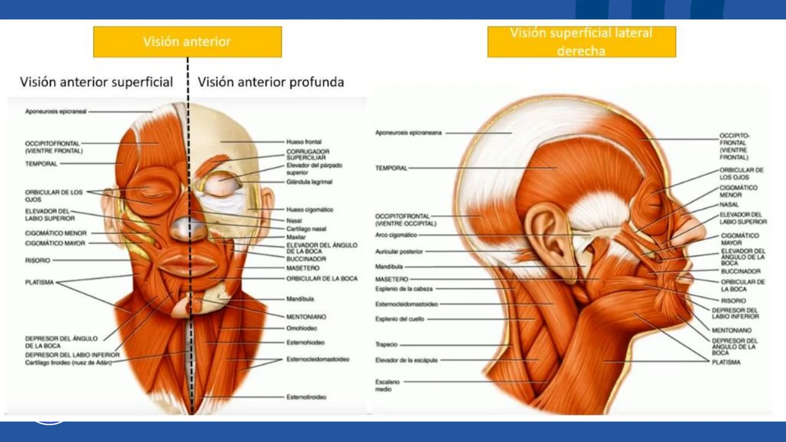
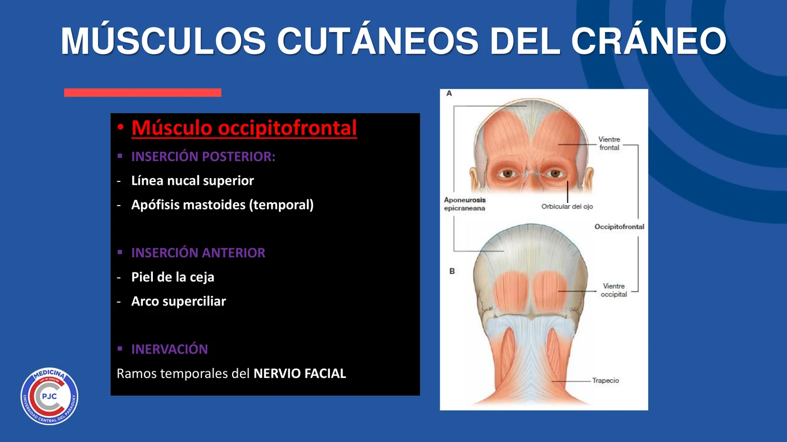
Músculo Occipitofrontal — largo, grosso e quadrilátero. É digástrico: tem 2 ventres musculares (occipital e frontal), unidos pela aponeurose (fáscia) epicraneal.
| Item | Detalhe |
|---|---|
| Inserção Posterior | Linha Nucal Superior · Apófise Mastoide (Temporal) |
| Inserção Anterior | Pele da sobrancelha · Arco Superciliar |
| Inervação | Ramos temporais do Nervo Facial |
| Função | Ventre frontal → eleva as sobrancelhas · Ventre occipital → desloca a pele e a aponeurose pra trás |
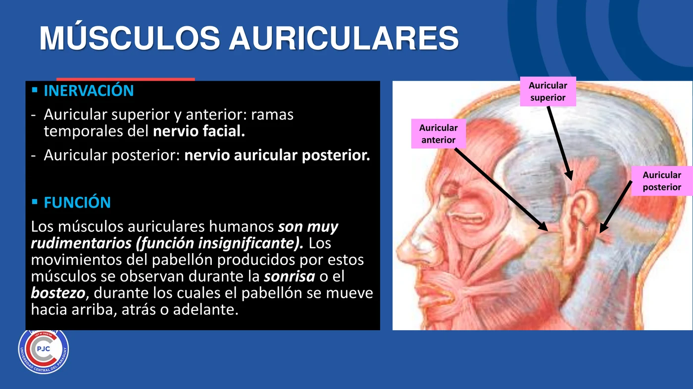
| Músculo | Origem → Inserção | Inervação |
|---|---|---|
| Auricular Anterior | Borde lateral da aponeurose epicraneal → Hélix da orelha | Ramos temporais do N. Facial |
| Auricular Posterior | Processo Mastoide do Temporal → Raiz do pavilhão auricular | Nervo Auricular Posterior |
| Auricular Superior | Aponeurose epicraneal → Parte superior do pavilhão | Ramos temporais do N. Facial |
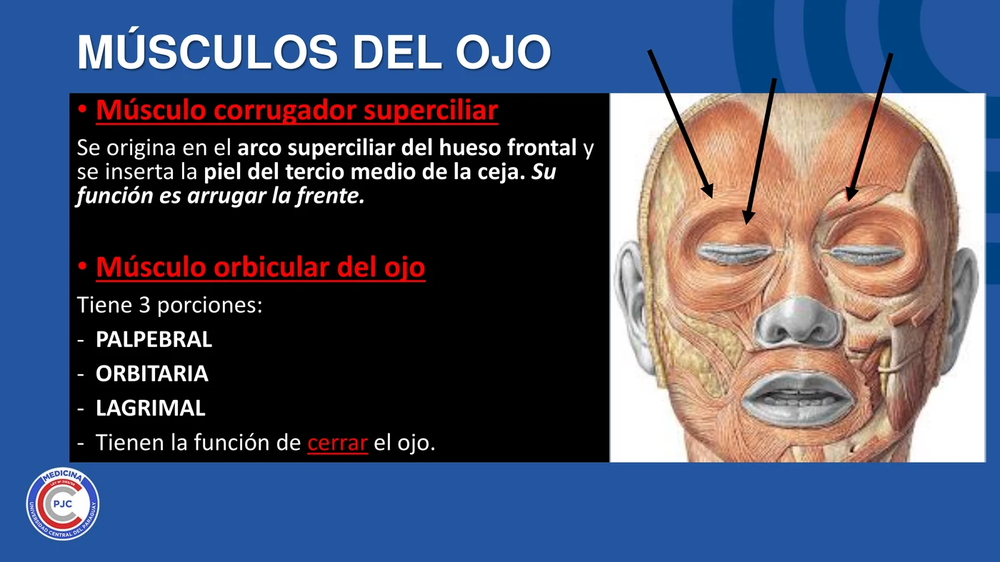
| Músculo | Origem → Inserção | Função |
|---|---|---|
| Corrugador do Supercílio | Arco Superciliar do Frontal → Pele do terço médio da sobrancelha | Enruga a testa (franzir) |
| Orbicular do Olho | 3 porções: Palpebral, Orbitária, Lagrimal | Fechar o olho |
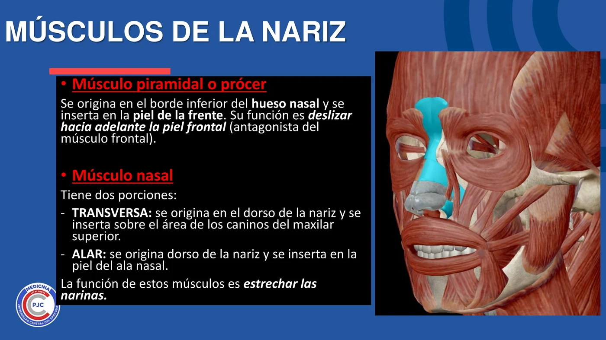
| Músculo | Origem → Inserção | Função |
|---|---|---|
| Piramidal (Prócer) | Borde inferior do Osso Nasal → Pele da testa | Desliza a pele frontal pra frente (antagonista do m. frontal) |
| Nasal — porção Transversa | Dorso do nariz → área dos caninos do maxilar superior | Estreitar as narinas |
| Nasal — porção Alar | Dorso do nariz → pele da asa nasal | |
| Depressor do Septo Nasal (Mirtiforme) | Cartilagens nasais → cara anterior da espinha nasal | Puxa a ponta do nariz pra baixo e pra trás |
| Elevador do Lábio Superior e da Asa do Nariz | Borde inferior da órbita e osso nasal → pele do lábio superior e asa nasal | Eleva lábio superior + asa nasal |
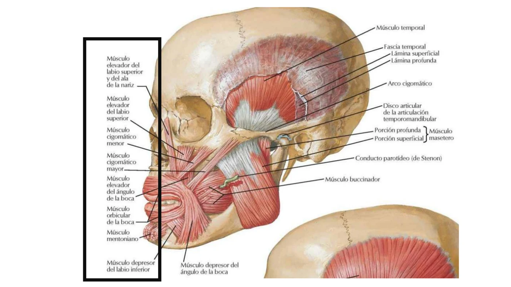
| Músculo | Origem → Inserção | Função |
|---|---|---|
| Orbicular da Boca | 2 porções (Marginal, Labial) — nascem nas comissuras labiais | Único músculo que FECHA a boca (esfíncter) |
| Buccinador | Porção alveolar dos maxilares + rafe pterigomaxilar → lateral ao ângulo da boca | Aumenta o diâmetro transversal da boca (soprar) · atravessado pelo conduto parotídeo de Stenon |
| Elevador Comum da Asa do Nariz e do Lábio | Maxilar (processo frontal) → asa nasal + lábio superior | Eleva asa nasal + lábio superior |
| Elevador Próprio do Lábio Superior | — | Eleva o lábio superior |
| Elevador do Ângulo da Boca (M. Canino) | Fossa canina do maxilar → ângulo da boca | Eleva a comissura labial |
| Zigomático Menor | Osso Zigomático → ângulo da boca + lábio superior | Retrai a comissura labial pra cima e pra fora |
| Zigomático Maior | Osso Zigomático → comissuras labiais | Eleva e retrai o ângulo da boca |
| Risório de Santorini | Região parotídea → ângulo da boca | Sorriso (dá nome ao músculo: "risório") |
| Depressor do Lábio Inferior | Linha oblíqua da mandíbula → pele do lábio inferior | Traciona o lábio inferior pra baixo e medial |
| Depressor do Ângulo da Boca | Linha oblíqua da mandíbula → Modíolo | Abaixa o ângulo da boca |
| Mentoniano | Cara externa do corpo da mandíbula → surco mentolabial | Desce a base do lábio inferior |
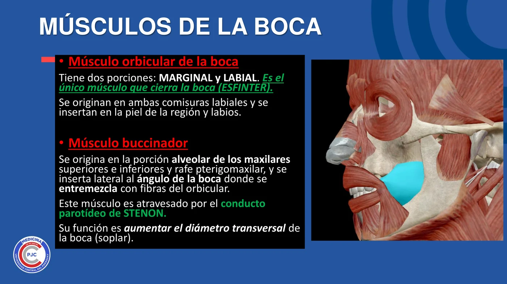
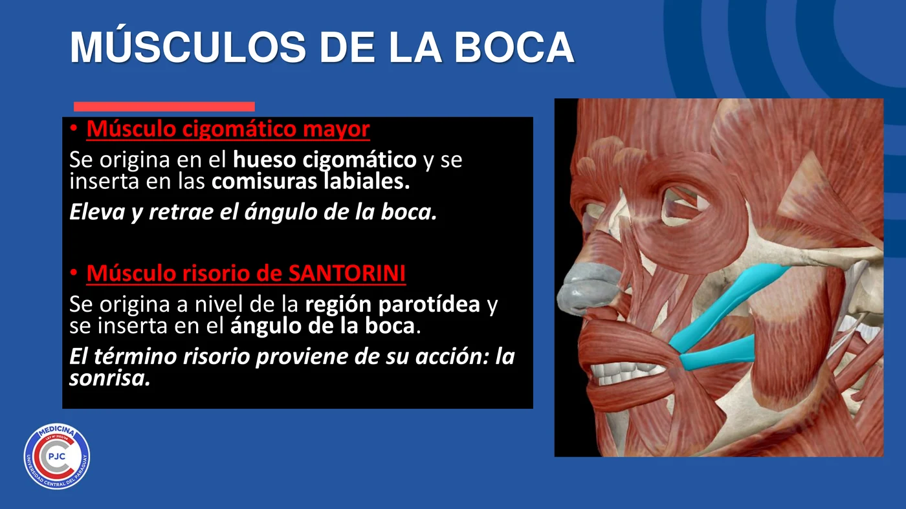
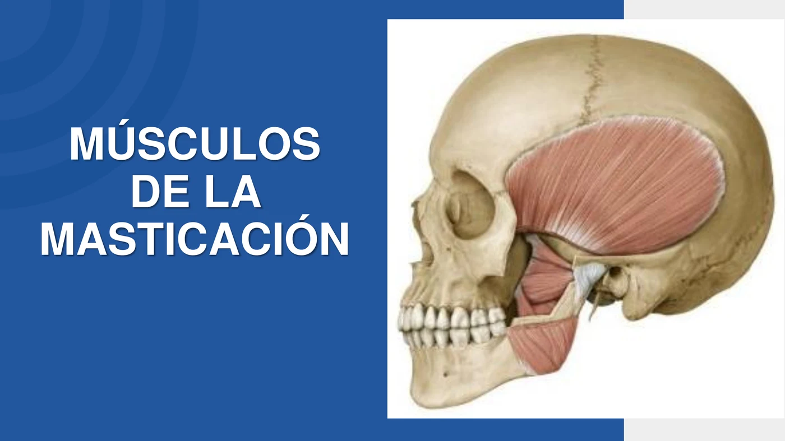
São 4 músculos: Temporal, Masetero, Pterigoideo Medial e Pterigoideo Lateral.
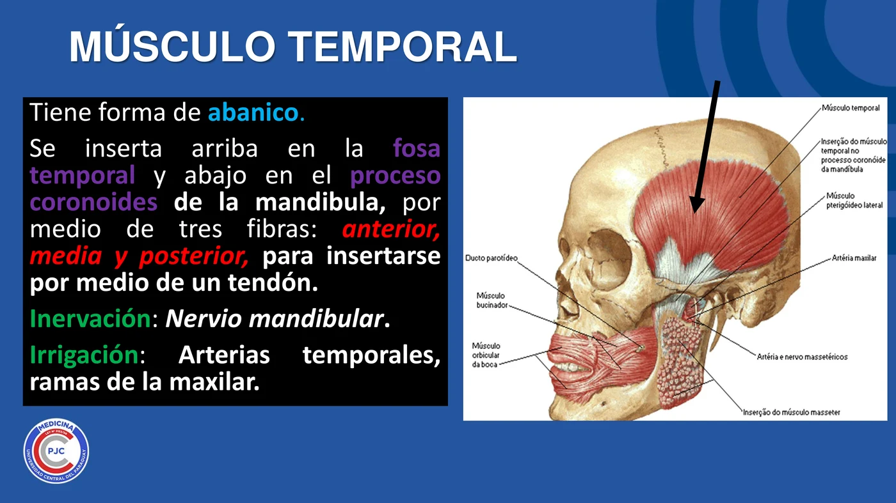
Forma de abanico. Insere-se acima na Fossa Temporal e abaixo no Processo Coronoide da mandíbula, por meio de 3 fibras (anterior, média e posterior) que convergem num tendão.
| Item | Detalhe |
|---|---|
| Inervação | Nervo Mandibular (V3) |
| Irrigação | Artérias temporais, ramos da Maxilar |
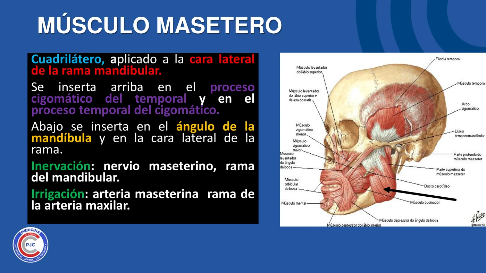
Quadrilátero, aplicado à cara lateral da rama mandibular. Insere-se acima no processo zigomático do Temporal e no processo temporal do Zigomático; abaixo no ângulo da mandíbula e na cara lateral da rama.
| Item | Detalhe |
|---|---|
| Inervação | Nervo Maseterino, ramo do Mandibular |
| Irrigação | Artéria Maseterina, ramo da Maxilar |
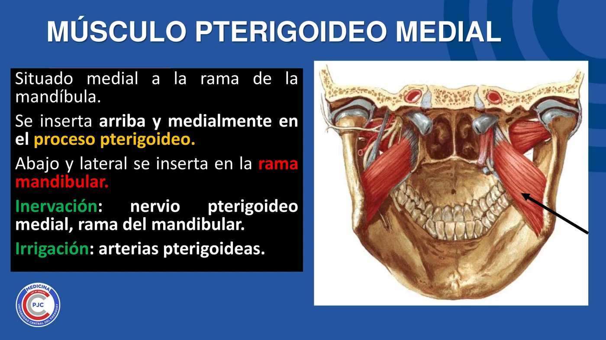
Situado medial à rama da mandíbula. Insere-se acima e medialmente no Processo Pterigoide; abaixo e lateralmente na rama mandibular.
| Item | Detalhe |
|---|---|
| Inervação | Nervo Pterigoideo Medial, ramo do Mandibular |
| Irrigação | Artérias Pterigoideas |
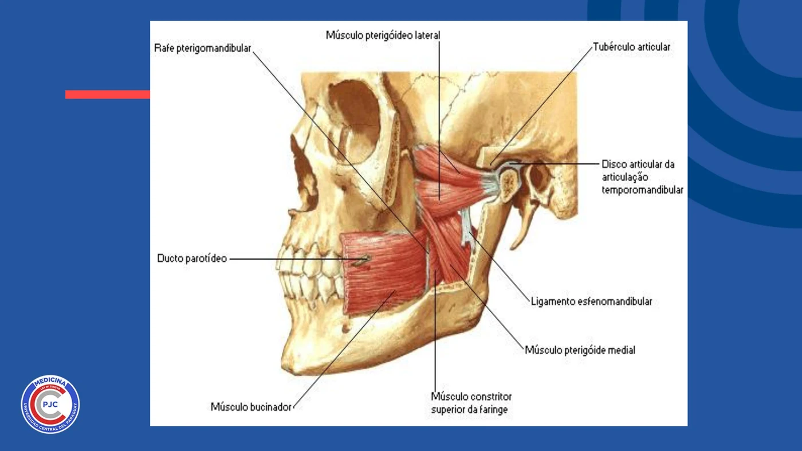
Situado lateral e superior ao outro pterigoideo. Único músculo da mastigação com 2 cabeças de origem.
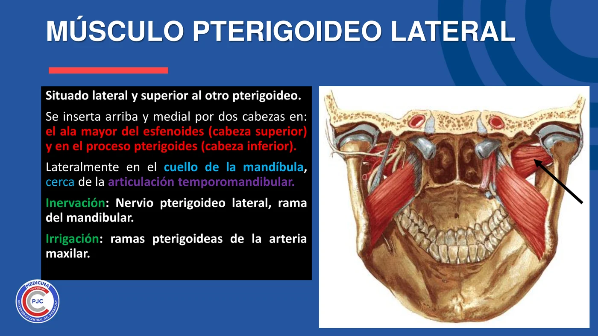
| Item | Detalhe |
|---|---|
| Cabeça Superior | Origina-se na Asa Maior do Esfenoide |
| Cabeça Inferior | Origina-se no Processo Pterigoide |
| Inserção | Lateralmente, no colo da mandíbula, perto da ATM |
| Inervação | Nervo Pterigoideo Lateral, ramo do Mandibular |
| Irrigação | Ramos pterigoideos da Artéria Maxilar |
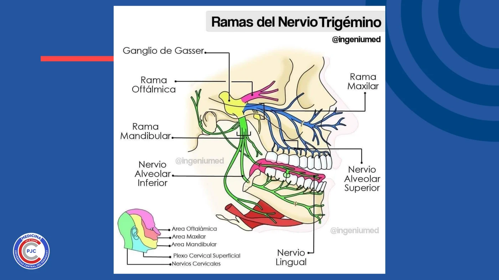
O Nervo Trigêmeo (V) se divide em 3 ramas: Oftálmica (V1, sensitiva), Maxilar (V2, sensitiva) e Mandibular (V3, mista — sensitiva + motora). É a raiz MOTORA do V3 que inerva os 4 músculos da mastigação.
| Aspecto | Frequência |
|---|---|
| Inervação Facial (VII) × Mandibular (V3) — mímica × mastigação | 🔥🔥🔥🔥🔥 |
| Os 4 músculos da mastigação e suas inserções | 🔥🔥🔥🔥🔥 |
| Pterigoideo Lateral — a exceção que abre a boca | 🔥🔥🔥🔥 |
| Orbicular da boca como único esfíncter | 🔥🔥🔥 |
| Conduto de Stenon atravessando o Buccinador | 🔥🔥🔥 |
| Grupos da mímica facial (5) e seus representantes | 🔥🔥🔥 |
Como TODOS os músculos da mímica facial são inervados pelo Nervo Facial (VII), uma lesão periférica desse nervo paralisa a expressão facial de um lado inteiro — teste clássico pra diferenciar de AVC.
O Pterigoideo Lateral é o principal músculo que abre a boca (depressor/protrusor da mandíbula) — os outros 3 músculos da mastigação (Temporal, Masetero, Pterigoideo Medial) fecham a boca (elevadores). Um desequilíbrio entre esses grupos, ou uma disfunção primária da articulação temporomandibular (ATM), causa dor, estalos e limitação de abertura bucal.
O conduto parotídeo (de Stenon) atravessa o músculo Buccinador antes de desembocar na cavidade oral, próximo ao 2º molar superior. Isso é relevante em feridas cortantes de bochecha e em procedimentos de cirurgia maxilofacial: uma lesão nessa trajetória pode causar uma fístula salivar externa.
15 imagens de dissecação real (material da cátedra) — músculos da mímica facial (cutâneos do crânio, auriculares, órbita, nariz, boca) e músculos da mastigação (temporal, masetero, pterigoideos). Toque em qualquer imagem pra abrir em tamanho grande (🔍 zoom).
25 rodadas de perguntas rápidas sobre origem, inserção, inervação e função dos músculos da mímica facial e da mastigação, 1 por vez, 60 segundos pra você responder mentalmente. A pergunta muda sozinha quando o tempo acaba (ou clica em "Já sei, próxima"). No final, você vê o gabarito completo de tudo.
O sistema guarda, no seu navegador, quais cards você já sabe bem e quais precisam voltar mais cedo — cada vez que você avalia um card, ele recalcula quando ele deve voltar.
15 questões cobrindo inervação (Facial × Trigêmeo/Mandibular), os 5 grupos da mímica facial e os 4 músculos da mastigação. Escolhe uma alternativa, depois clica em "Ver comentário completo".